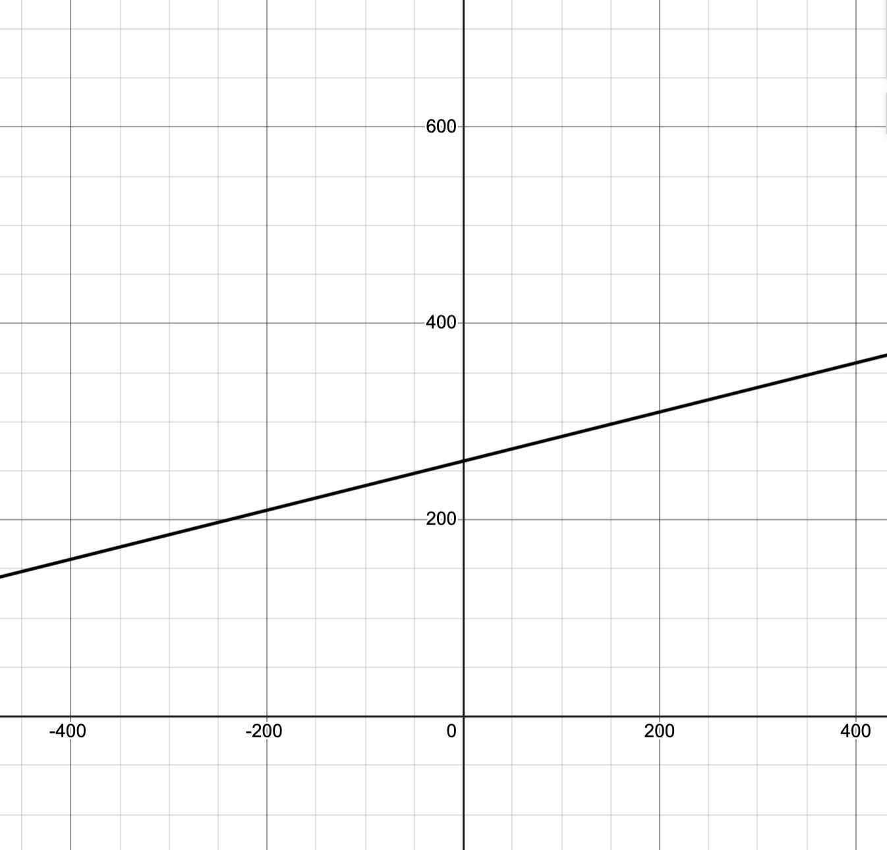

#3
The graph of a function f is given.
(a) State the value of $f(1)$.
(b) Estimate the value of $f(-1)$.
(c) For what values of x is $f(x)=1$?
(d) Estimate the value of x such that $f(x)=0$.
(e) State the domain and range of $f$.
(f) On what interval is $f$ increasing?
(a) $f(1) = 3$
(b) $f(-1) \approx -0.9$
(c) $f(x) = 1$ => $x = 0 \text{ or } x = 3$
(d) $f(x) = 0$ => $x \approx -0.53$
(e) Domain: $[-2, 3]$, Range: $[-1, 3]$
(f) $f$ is increasing on $[-2, 1]$
#9
Determine whether the curve is the graph of a function of x.
If it is, state the domain and range of the function.
ANS: the curve in the graph is a function of $x$
DOMAIN: $[-3,2]$ RANGE: $[-3,3]$
#15
The graph shows the power consumption for a day in September in San Francisco. (P is measured in megawatts; t is
measured in hours starting at midnight.)
(a) What was the power consumption at 6 am? At 6 pm?
(b) When was the power consumption the lowest? When was
it the highest? Do these times seem reasonable?
ANS: (a) Power consumption at 0600hrs: $500$ megawatts
Power consumption at 1800hrs: 720 megawatts
(b) Power consumption was lowest at 0440hrs.
The times are reasonable as there is less consumption at night when most people and businesses are asleep or closed. Vice-versa for day.
#26
A spherical balloon with radius r inches has volume
V(r)= 4/3 pi r^3. Find a function that represents the amount of
air required to inflate the balloon from a radius of r inches
to a radius of r+1 inches.
ANS: formula for volume of a sphere: $V(r) = \frac{4}{3}\pi r^3$
volume when the radius is $r+1$: $V(r+1) = \frac{4}{3}\pi (r+1)^3$
amount of air needed: $A(r) = V(r+1) - V(r) = \frac{4}{3}\pi \bigl((r+1)^3 - r^3\bigr)$
$(r+1)^3 = r^3 + 3r^2 + 3r + 1$
so
$A(r) = = \frac{4}{3}\pi \bigl(3r^2 + 3r + 1\bigr)$
#27
Evaluate the difference quotient for the given function. Simplify your answer.
$f(x)=4+3-x^2, \frac{f(3+h) - f(3)}{h}$
ANS: $f(x)=4+3-x^2 = f(x) = 7 - x^2$
$f(3 + h)$:
= -2 - 6h - h^2$
$f(3 + h) = 7 - (3 + h)^2 = 7 - \bigl(9 + 6h + h^2\bigr)
$f(3)$:
$f(3) = 7 - 3^2 = 7 - 9 = -2$
difference quotient: $\frac{f(3 + h) - f(3)}{h}
= \frac{\bigl(-2 - 6h - h^2\bigr) - (-2)}{h}
= \frac{-2 - 6h - h^2 + 2}{h}
= \frac{-6h - h^2}{h}
= -6 - h$
#32 Find the domain of the function.
$f(x) = \frac{2x^3 - 5}{x^2 + x - 6}$
$x^2 + x - 6 = (x + 3)(x - 2)$
$(x + 3)(x - 2) = 0$ ⇒ $x = -3$ or $x = 2$
$(-\infty,\,-3)\cup(-3,\,2)\cup(2,\,\infty)$
#43 Evaluate f(-3), f(0), and f(2) for the piecewise defined
function. Then sketch the graph of the function.
content
$f(x)= {x+1 \text{if} x \ge -1}$
${x^2 \text{if} x \gt -1}$
#62
A Norman window has the shape of a rectangle surmounted
by a semicircle. If the perimeter of the window is 30 ft,
express the area A of the window as a function of the width
x of the window
rectangle width $= x$
rectangle height $= y$.
semicircle radius $= \tfrac{x}{2}
Perimeter = (bottom edge) + (two vertical sides) + (semicircle arc):
$x + 2y + \pi \frac{x}{2} = 30.$
Solve for $y$:
$2y = 30 - x - \frac{\pi x}{2},$
so
$y = 15 - \frac{x}{2} - \frac{\pi x}{4} = 15 - \frac{(2 + \pi)}{4}x.$
Area = (area of the rectangle) + (area of the semicircle):
$A(x) = x \cdot y + \frac{1}{2}\,\pi \bigl(\tfrac{x}{2}\bigr)^{2}
= x\Bigl(15 - \frac{(2+\pi)}{4}x\Bigr) + \frac{\pi x^2}{8}$
$A(x) = 15x - \frac{(2+\pi)}{4}x^2 + \frac{\pi x^2}{8}
= 15x - \frac{(4+\pi)}{8} \, x^2.$
#4
Classify each function as a power function, root function,
polynomial (state its degree), rational function, algebraic function,
trigonometric function, exponential function, or logarithmic function.
(a) $y = 3x$ ⇒ A polynomial of degree 1 (linear)
(b) $y = 3^x$ ⇒ An exponential function
(c) $y = x^3$ ⇒ A polynomial of degree 3
(d) $y = x^(1/3)$ ⇒ A root function (also a power function with exponent 1/3)
#5
Find the domain of the function.
$f(x)=\frac{cosx}{1-sinx}$
$sin x ≠ 1 $
$x = π/2 + 2nπ$, for any integer n$
$ Domain = ℝ \ { x | x = π/2 + 2nπ, n ∈ ℤ }$
#13
If the recommended adult dosage for a drug is D (in mg),
then to determine the appropriate dosage c for a child of
age a, pharmacists use the equation c − 0.0417Dsa 1 1d.
Suppose the dosage for an adult is 200 mg.
(a) Find the slope of the graph of c. What does it represent?
(b) What is the dosage for a newborn?
$c = 0.0417 D · a$
adult dosage D is 200 mg
$c = 0.0417 × 200 × a = 8.34 a$
newborn (a = 0),
c = 8.34 × 0 = 0 mg
dosage for a newborn is 0 mg
#15
The relationship between the Fahrenheit (F) and Celsius
(C) temperature scales is given by the linear function
$F =\frac{9}{5} C + 32$
(a) Sketch a graph of this function.
(b) What is the slope of the graph and what does it repre-
sent? What is the F-intercept and what does it represent?
Slope $=\frac{9}{5}$
for every 1° increase in Celsius, Fahrenheit increases by 9/5°
F-intercept = 32, which is the Fahrenheit temperature when Celsius is 0
#17
Biologists have noticed that the chirping rate of crickets of
a certain species is related to temperature, and the relation-
ship appears to be very nearly linear. A cricket produces
113 chirps per minute at 70°F and 173 chirps per minute
at 80°F.
(a) Find a linear equation that models the temperature T as
a function of the number of chirps per minute N.
(b) What is the slope of the graph? What does it represent?
(c) If the crickets are chirping at 150 chirps per minute,
estimate the temperature.
(a)
$(N, T) = (113, 70)$ and $(N, T) = (173, 80)$
slope, $m$, of the line:
$m = \frac{80 - 70}{173 - 113} = \frac{10}{60} = \frac{1}{6}$
point-slope form $(113, 70)$:
$T - 70 = \frac{1}{6}(N - 113)$
Solve for $T$:
$T = \frac{1}{6}(N - 113) + 70$
slope-intercept form:
$T = \frac{1}{6}N - \frac{113}{6} + 70$
Since $70 = \frac{420}{6}$, we have:
$T = \frac{1}{6}N + \frac{420 - 113}{6} = \frac{1}{6}N + \frac{307}{6}$
:
$T = \frac{1}{6}N + \frac{307}{6}$
(b)
slope is $\frac{1}{6}$, for each additional chirp per minute, the temperature increases by $\frac{1}{6}$°F
(c)
estimate temperature $N=150$ chirps/minute:
$T = \frac{1}{6}(150) + \frac{307}{6} = \frac{150 + 307}{6} = \frac{457}{6} \approx 76.17$°F
#19
At the surface of the ocean, the water pressure is the same
as the air pressure above the water, $15 lb/in^2$. Below the sur-
face, the water pressure increases by $4.34 lb/in^2$ for every
10 ft of descent.
(a) Express the water pressure as a function of the depth
below the ocean surface.
(b) At what depth is the pressure $100 lb/in^2$?
(a)
$d$ = depth in feet.
pressure as a function of depth is:
$P(d) = 15 + 0.434d$
(b)
when $P(d) = 100$ lb/in²:
Set $15 + 0.434d = 100$.
Then $0.434d = 100 - 15 = 85$, so
$d = \frac{85}{0.434} \approx 195.6$ ft.
#20
The monthly cost of driving a car depends on the number
of miles driven. Lynn found that in May it cost her $380 to
drive 480 mi and in June it cost her $460 to drive 800 mi.
(a) Express the monthly cost C as a function of the distance
driven d, assuming that a linear relationship gives a
suitable model.
(b) Use part (a) to predict the cost of driving 1500 miles per
month.
(c) Draw the graph of the linear function. What does the
slope represent?
(d) What does the C-intercept represent?
(e) Why does a linear function give a suitable model in this
situation?
(a)
Slope: $m = \frac{460-380}{800-480} = \frac{80}{320} = \frac{1}{4}$
$380 = \frac{1}{4}(480) + b$ → $380 = 120 + b$ → $b = 260$.
So, $C(d) = \frac{1}{4}d + 260$.
(b)
For $d = 1500$:
$C (1500) = \frac{1}{4}(1500) + 260 = 375 + 260 = 635$
(c)

slope, $\frac{1}{4}$, represents the additional cost (in dollars) per mile driven.
(d)
The $C$-intercept is 260, which represents the fixed monthly cost when no miles are driven.
(e)
A linear function is suitable because the cost is composed of a fixed portion
plus a variable portion that increases at a constant rate per mile.